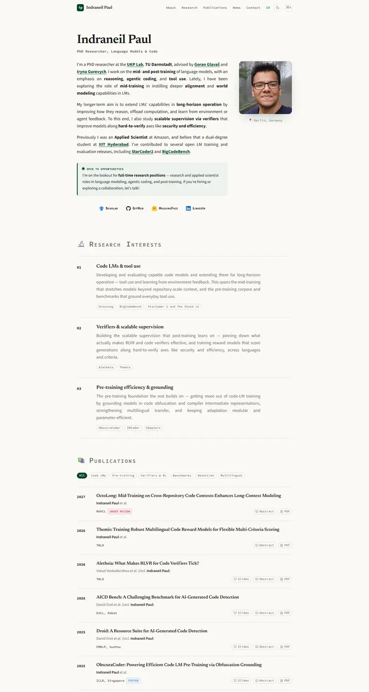

Indraneil Paul
奶油色纸上一本整洁的实验室笔记，衬线标题，小型大写的打字机风格标签，所有可点的链接都用同一种瓶绿色墨水。

已对照实际渲染的页面核对。
入选理由
温暖的纸张底色，混用衬线、等宽和小型大写字体。研究方向带编号和标签，论文列表可筛选并把年份放在左侧边栏，做工丰富，打磨到位。
下面的说明和 DESIGN.md 正文是英文。为了让编程 agent 读同一个版本，这部分没有翻译。
概述
配色
字体
Newsreader
Indraneil Paul, code generation with LLMs
Abstract · Method · Results · BibTeX — 0123456789
Source Sans 3
Indraneil Paul, code generation with LLMs
Abstract · Method · Results · BibTeX — 0123456789
Source Code Pro
Indraneil Paul, code generation with LLMs
Abstract · Method · Results · BibTeX — 0123456789
间距与形状
页面模块
使用建议
相似风格

Amir Bar
一份帝国理工蓝的简洁院系简介，白底配 Inter、胶囊链接，论文卡片在你伸手时会浮起几像素。

Christoph Feichtenhofer
一条 Facebook 蓝的会场横幅，下面是长长的论文账本，红色标题、绿色出处、两端对齐的灰色摘要。

David Novotny
黄昏的港口旁一间安静的阅览室，固定的青色到午夜蓝渐变面板上是右对齐的联系方式，白底上是柔灰文字和橘色链接。

Jaeyeon Kim
一份用细体 Roboto 排的安静研讨会讲义，唯一提高音量的，是一个红色高亮的问题和一排薄荷绿标签。

Jonathan Shafer
一张主题演讲的开场幻灯片，满版的石板蓝色块、带圆环的肖像、108px 的名字，还有一段隔着整个会场也能读清的居中文字。

Junyang Lin
暖色纸面上一本安静的研究者作品集，Garamond 标题、青绿色小标签，条目之间以细线分隔。